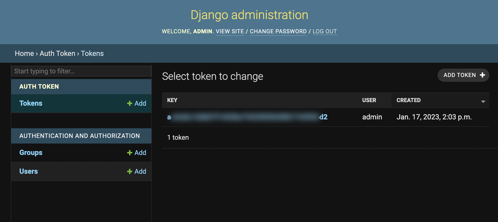

How to create API credentials with the admin panel?
To secure your database, you'll need to create an admin user with an authentication token.
Requirements
You need the Open Recommendation Butler backend up and running.
Creating credentials
- Enter the shell of the Django Docker container
docker exec -it orb-django-1 sh
- Create an admin user account in the container shell
python manage.py createsuperuser
-
Follow the instructions to add an username and a password
-
Open the admin terminal in your browser by visiting http://localhost:8000/api/admin.
-
Log in with your newly created account. Here you'll find your authentication token.
